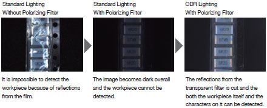

High-brightness Models
Building Automation
Industrial Automation
Power Automation & Safety


Bangladesh Distributor
FL Series
Lighting for Image Processing

Next generation ODR technology
about this Product Family
Related Contents
- Sensors
- Vision Sensors / Machine Vision Systems
- Features
- Lineup
- Specifications
- Dimensions
- Catalog
last update: April 04, 2013
High-luminance ODR Lighting - beyond the Limitations of LEDs
The Highest Brightness in the Industry*
ODR lighting is the latest optics technology and has been invented during the development of a compact image processing camera with built-in lighting.
ODR is defining a new dimension in brightness, and enables the highest light efficiency in the industry.
*OMRON Investigation in November 2010
Cutting Edge ODR Optics Technology (Patent Pending)
Standard Shell-type LEDs
The light created with standard LED lighting has limited efficiency for illumination. It is possible to increase brightness, but doing so causes problems, such as deterioration of the LEDs caused by increased heat.
ODR Lighting
By applying our unique optics technology for an ODR structure to surface mounted chips with high heat dissipation and light efficiency, ODR achieves brightness levels that are approximately 4 times higher than conventional technologies.
Stable Inspection for High-speed applications
Even on high-speed lines where lack of brightness inevitably results in blurred images, ODR makes it possible to produce stable images without reducing the line speed.
Bright Even through a Polarizing Filter

Because previous brightness levels were insufficient, using a polarizing filter resulted in dark images and made it impossible to create sharp images of the workpiece.
With ODR lighting, the brightness in the field of view can be maintained even through a polarizing filter . This allows to cut out only the reflected light from glossary areas, and create bright evenly lit images.
High Brightness in a Small Package
It is possible to provide sufficient illumination by using a smaller light.
It is not necessary to use a large light to achieve the necessary brightness or customize lights to fit into small spaces.
Highest inspection stability with Uniform, wide-area Illumination
Wide Area Models
Uniform and wide-area Illumination over the Field of View
The uniform illumination area* is broader than previous lighting systems (up to 1.5 times).
By illuminating uniformly from corner to corner over the field of view, a sharp image of the workpiece is created to stabilize inspections and measurements.
*Area of illumination with a relative illuminance of 0.50 or higher.
Illumination Distribution Chart *

* Reference values for a 90-mm-dia. light at a working distance of 100 mm.
Wide Range of Working Distance
The area of uniform illumination for the FL Series is wide and the working distance that can be handled by 1 light is approximately 2 times larger than of a standard light.
This gives more flexibility for the installation location of the light.
Inspection in the Corners
The FL Series consistently illuminates the field of view, so it is not necessary to change the inspection parameters for the central or outside areas. Thanks to the uniform illumination, the same inspection results can be achieved in corners or center of the FOV.
Easy Handling for Changing Field of View
The inspection area is wide, so even if the camera's field of view changes because of a change in the product model or production line, it is possible to use the same lighting
Cover a Broad Area with One Model
There is a broad area of stable illumination, and this increases the area that can be covered with one product model.
Simple Installation and Control
Easy Design and Installation
Bar Lighting
Fit in any location.
Wiring
The cable can extend from either direction, allowing for horizontal or vertical wiring layouts on the mounting surface.
Mounting and Adjustment
The light is structured for mounting with nuts to an arm on the back or side surfaces.
Minute changes in the position can be achieved by sliding the light.
Specialized mounting brackets enable mounting at a flexible angle.
Ring Lighting
smallest and lightest in the industry- the FL Series can fit in places where lights could not be installed before.
Size
The superior brightness of ODR lights enables an adequate illumination with a smaller unit.
It is possible to mount lighting even in narrow locations.
Installation Distance
Because a large area in the field of view can be inspected, the installation location can be selected more flexibly.
Light Weight
With the lightest body in the industry, this light can be attached to thin arms and fixtures.
The arms won’t be distorted by the weight.
Easy Control and Adjustment of the Lighting
Lighting Controller
With a compact design small enough to fit in the palm of your hand, the Controller can be built into the control panel or in the gap between production lines.
By using the longest lighting cable in the industry (25 m), the Controller can be installed along with the image processing monitor in a variety of locations. It is possible to adjust the lighting while looking at the screen.
Connect to a Remote Control Panel
Mount to a DIN Rail underneath the Line or in the Gap between Tables
Lighting Control without Programming
This enables light emission synchronized with the camera using essentially any trigger, such as a photoelectric sensor.
The Controller be connected to an image processing device to control lighting without any programming on a PLC.
[Control Output]
•PNP/NPN compatible
•Power source: 24 V
[Lighting Emission Controls]
•Lighting triggers can be used individually for each channel.
•Lighting delay and lighting time can be controlled.
Intuitive Digital Light Controls
Digital adjustment of light emission makes it easy to reproduce the lighting environment after line switchovers.
last update: April 04, 2013